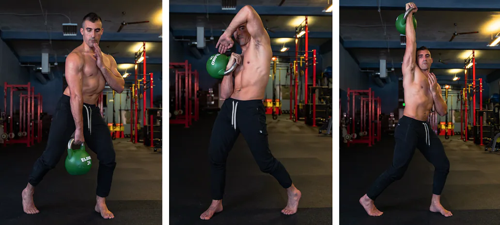
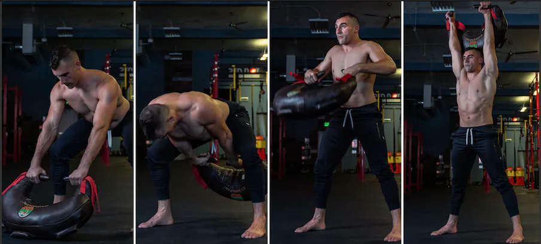

B280 · What gymnastics, synchronized swimming and YOU have in common...
Hi {first_name},
One thing that has always amazed me is that as humans, we innately have the ability to recognize beautiful movement when we see it.
Often, when a movement or routine looks beautiful, there tends to be exquisite:
When any of the above are lacking, something will just look or feel off, and the movement will appear less than "beautiful".
I'm sure if you've ever seen a clip on TV/Youtube of high-level gymnastics or synchronized swimming, you know what I'm talking about.
Here's an example of my dear friend, Sho Nakamori on the Pommel Horse when he was an olympic hopeful.
Moving with rhythm, timing, and fluidity are things that can be developed over time with focused practice.
With this in mind, for today I've broken down the steps to performing two movements I consider to be incredible beautiful when well executed. They are very complementary, so if you'd like to perform them as a back to back superset workout you can and they'll work great to improve your overall athleticism.
RMT (Rotational Movement Training) Clean to Press

Bulgarian Bag Snatch

With the Kettlebell RMT Clean to Press and Bulgarian Bag Snatch, you'll develop: coordination, rhythm, timing, fluidity, rotational strength, core control, power and more
I hope you explore these movements in your training and of course, have a blast doing so!
Wishing you a great evening, Mike
P.S. Did you know you can now workout online Live with me?
Yup, it's true ; ) I just started a Patreon page offering a weekly Live workout called Bags and Bells that comes out to less than $12 a session! If you want more training variety, learn how to use the Bulgarian Bag safely, improve fitness with Kettlebells, get a legit, joint-by-joint warm-up, and stand taller and feel amazing with myofascial stretching ELDOAs post-training, my new Bags and Bells class is a great option for you.
Click here for more info - first class starts Wednesday (you can also watch live for 24 hours as well as explore other options) |